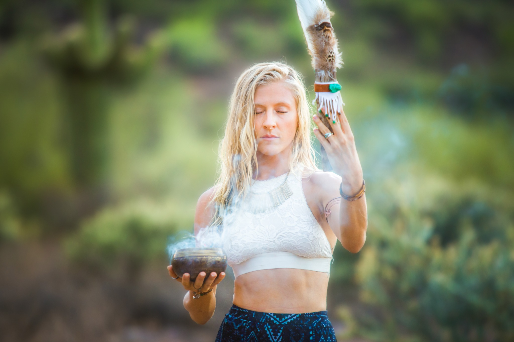

A Healing Rituals experience for Mindfulness Monday
Relax. Replenish.
Merge with the Divine.
The Grove · 315 E Hyman Ave, Aspen, CO
Step out of the demands of everyday life and into a deeply immersive journey of sound, guided inner exploration, and sacred connection.
Led by Lauren of Healing Rituals, this experience weaves live sound healing with Quantum Subconscious Reprogramming, inviting you into the spacious place between waking and dreaming—where the body can soften, the mind can grow quiet, and new possibilities can be imagined and felt.
As waves of sound surround you, you’ll be guided through a rich inner landscape of restorative imagery and meaningful intention. Let the weight of doing and holding begin to melt away. Explore the feeling of being supported, connected, and at home within yourself.
This is time to rest deeply, reconnect with your inner wisdom, and make room for what you want to feel more of: peace, clarity, vitality, and trust.
Come carrying the day. Give yourself space to leave feeling lighter, replenished, and more connected to yourself.
No meditation experience is needed. Bring a blanket, yoga mat, and eye mask, or RSVP to have a set provided. Then come get comfortable and melt effortlessly into the creative healing space of merging with divinity.

October 26 · 6:30 PM · $35Reserve your place · $35 per person
Join Us for
Melt Into the Divine
Monday, October 26, 2026 at 6:30 PM
The Grove · 315 E Hyman Ave, Aspen, CO
RSVP below and let us know whether you would like a yoga mat, blanket and eye mask prepared for your journey.
Submitting this form confirms your RSVP. Your reservation is complete—no additional confirmation is needed.
Private events · collaborations · retreats
Bring Healing Rituals Into Your Gathering
Vibrational medicine, sound, energy clearing and guided journeys can be created for private retreats, intimate celebrations, wellness gatherings and aligned collaborations in Aspen and the Roaring Fork Valley.
Begin an event inquiry